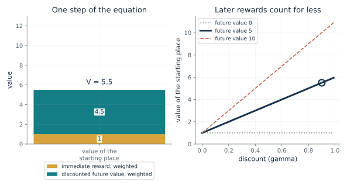
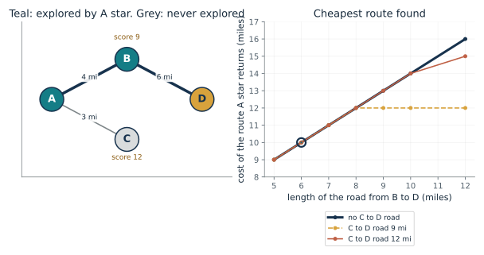
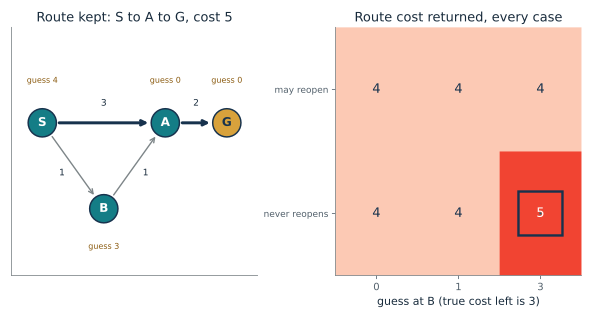
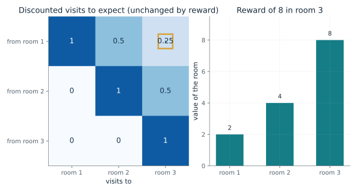
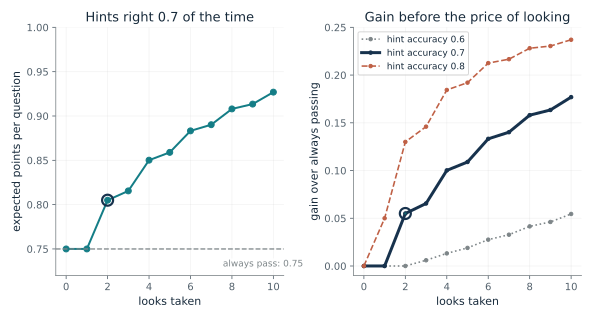
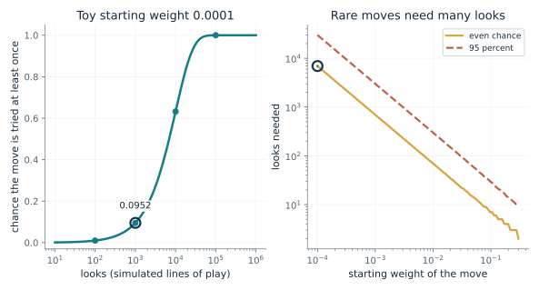

Ask what the model holds, what the score ranks, and what each look costs. Work a value or a route score by hand on a small map before trusting a search, check whether a first look can look worthless while two looks pay, and ask a planner to list the constraints it assumed so that missing ones show. A search can only weigh the futures its model contains.
“My planner scored a route as best, but a move nobody listed won the game. Was the search wrong, or was the model missing something?”
Use mmi-ch17-considering-future with the companion's AI skill package. The illustrations below also work on their own.
How does the value of a place come from what happens next?
From Chapter 17, A map can be scored after the goal changes
A place pays 1 now and leads to a place worth 5 later. What is it worth when later rewards count for less?
The value of a place looks one step ahead. It averages, over where the rule might take you, the reward you collect on the way plus the discounted value of arriving. A discount near zero makes only the next reward count, and a discount near one makes the far future count almost fully.
Predict first: With future value 5, predict the discount at which the later reward contributes exactly as much as the immediate reward of 1.

Discount (gamma): 0.9 · Future value of the next place: 5 · Chance of reaching that place: 1.0
What happens: With one possible next place, discount 0.9 and future value 5, the value is 1 + 0.9 x 5 = 5.5. The future supplies 4.5 of the 5.5, so most of the value is later.
The only reachable place pays 1 now and is worth 5 later; with discount 0.9 it adds 4.5, so the value is 5.5. Raising the discount makes the future count for more.
- Value of the starting place
- 5.5
- Immediate part
- 1
- Discounted future part
- 4.5
A planner that holds a model of how places lead to one another can score any place by this equation once it is given a goal and a rule, without a new trip.
Tolman read the rats' sudden drop in errors as a cognitive map. The chapter says calling a map a transition model is a modern reading, not Tolman's, and the rat is not shown to hold this table.
An agent that stores a transition model and plans with it is called model-based. The equation is a specification of how such an agent scores a place under a fixed rule.
Show the calculation
V = 1 x (1 + 0.9 x 5) + 0 x (0 + 0.9 x 0) = 5.5.
The equations and symbols
- s, s'
- the current place and a possible next place
- T(s' | s)
- the chance of going to s' from s under the fixed rule
- r(s, s')
- the immediate reward for that step
- V(s')
- the future value of the next place
- gamma
- the discount, at least 0 and below 1; later rewards count for less
One fixed rule for choosing actions, known chances, a discount at least 0 and below 1, and a next-place value that is given. The equation evaluates the fixed movement rule; finding the best rule needs a comparison of actions. A rat's remembered route is not shown to be encoded in this table.
Check your understanding: A place pays 1 now and leads with certainty to a place worth 10. With discount 0.5, what is its value?
Book source: Chapter 17, A map can be scored after the goal changes. Illustration C17-D01. Formula. Book equation and its worked example: one possible next place, immediate reward 1, future value 5, discount 0.9, giving 5.5. The other discounts, future values and the 0.6 chance of reaching the place are this companion's variations.
Why does A star explore B first and never touch C?
From Chapter 17, A town map and a score for every open road
Which towns does a search explore on a four-town map, and what route does it return?
The search always explores the place with the lowest score, cost so far plus a guess of what is left. A guess that never runs too high means a place's score is a floor on any route through it, so once the goal has the lowest score no unexplored place can beat it. When the road from B to D is long enough, B's route to D stops being the cheapest and the search turns to C.
Predict first: With the road from B to D at 6 miles and no road from C, predict which town is explored first and whether C is ever explored.

Length of the B to D road (miles): 6 · Road from C to D: 0
What happens: B scores 4 + 5 = 9 and C scores 3 + 9 = 12, so B is explored first. D is then reached at 4 + 6 = 10, below C's 12, so the search stops and C is never explored. Searching by cost so far alone explores C and B before reaching D.
A star returns A to B to D at 10 miles after exploring 2 places (A, B). Using cost so far alone, with no guess, explores 3 (A, C, B).
- Route found
- A to B to D
- Cost (miles)
- 10
- Places A star explored
- A, B
- Places explored by cost so far alone
- A, C, B
Planning means running a model forward to see where actions lead, and every road leads to more roads. A good guess prunes the roads that cannot win without losing the best route.
A star is engineering proved on paper, built for machines. The chapter does not offer it as a model of how people or rats search.
A star is a specification with a proof: with a guess that never runs high, the route it returns is a cheapest one. Its authors note that exploring the fewest places might not minimize the total resources used.
Show the calculation
Score = miles so far + straight-line guess. B: 4 + 5 = 9. C: 3 + 9 = 12. Through B the route to D costs 4 + 6 = 10; there is no road from C to D in this map.
The equations and symbols
- n
- a place on the map
- g(n)
- the cost of the best path found so far from the start to n, in miles
- h(n)
- a guess at the cost from n to the goal; it must never exceed the true cost left and must equal zero at the goal
- f(n)
- the score: cost so far plus the guess
A finite map with nonnegative road costs, guesses that never exceed the true cost left and equal zero at the goal, and a search that may reopen a place when it finds a cheaper way there. A star was built for machines and is not a model of how people search.
Check your understanding: With the B to D road at 12 miles and a 9 mile road from C to D, which route does A star return, and what does it cost?
Book source: Chapter 17, A town map and a score for every open road. Illustration C17-D02. Formula. Hart, Nilsson and Raphael (1968) as the chapter describes them, with the chapter's four-town map: A to B 4 miles, A to C 3 miles, B to D 6 miles, straight-line guesses 5 from B and 9 from C. The chapter gives no road from C to D; the optional C to D road and the other B to D lengths are this companion's variations, kept at least as long as the straight-line guesses so that those guesses never run too high.
What goes wrong if a search will not reopen a place?
From Chapter 17, A town map and a score for every open road
A place is closed at one cost and a cheaper way to it turns up later. Does the search still return a cheapest route?
At first the search reaches A at cost 3 and B at cost 1. A scores 3, below B's score of 1 plus its guess. With the guess at B of 3, B scores 4, so A is explored first and closed. When B is explored, it offers A a cheaper cost of 2. A search that may reopen A takes it, and G is then reached at 4. One that cannot reopen keeps cost 3 for A and reaches G at 5.
Predict first: With the guess at B set to 3 and a search that never reopens a closed place, predict whether the route cost it returns is 4 or more.

Guess of the cost left from B: 3 · Search may reopen a place: 0
What happens: With the guess at B at 3 and no reopening, A is closed at cost 3 before B is explored. The cheaper way through B (cost 2 to A) is never used, and the search returns 5 instead of the cheapest 4. Allow reopening, or lower the guess at B to 1 or less, and the cost is 4.
With the guess at B set to 3 and reopening not allowed, the search returns a route costing 5; the cheapest is 4. A place that was closed early had a cheaper way found later and was never revisited.
- Cost returned
- 5
- True cheapest cost
- 4
- Places explored
- S, A, B
- Search may reopen places
- no
A guarantee has conditions. A planner that drops one of them, here by never reopening, can return a route that is worse than the best without any sign that it has.
This is a specification checked by tracing a small graph. Straight-line distance never needs reopening, so the chapter's town map is not affected.
Show the calculation
Roads S to A 3, S to B 1, B to A 1, A to G 2. Cheapest route S, B, A, G costs 1 + 1 + 2 = 4. A scores 3 + 0 = 3 on first reach, while B scores 1 + 3 = 4; if A is closed first at cost 3 and never reopened, G is reached at 3 + 2 = 5.
The equations and symbols
- G
- the goal the search selects
- n
- an open place on an optimal route
- C*
- the cost of a cheapest route
- f, g
- score and cost so far; the chain holds when guesses never run high and cheaper ways to a place are reopened
A finite directed graph with nonnegative costs and guesses that never exceed the true cost left. The guess at S is not consistent with the roads, which is why the chapter's reopening condition matters. Straight-line distance never needs reopening; this made-up guess is not a straight-line distance.
Check your understanding: With the guess at B set to 1 and no reopening, which of A and B is explored first, and what does the search return?
Book source: Chapter 17, A town map and a score for every open road. Illustration C17-D03. Constructed example. The constructed numeric check in the book's Derivation 16: roads S to A 3, S to B 1, B to A 1 and A to G 2, with guesses 4, 0, 3 and 0 at S, A, B and G. Reopening finds cost 4, and permanently closing gives 5. The other guesses at B are this companion's variations, kept at or below the true cost left (3).
Can a table of expected visits be re-scored when only the goal moves?
From Chapter 17, Four rats and place cells that pictured the path ahead
A walker steps right through three rooms and stops in room 3. If the reward moves from room 3 to room 2, what changes in the table and what changes in the values?
From room 1 the walker visits room 1 now, room 2 one step later and room 3 two steps later, and later visits count for less by the discount each step. Those weights depend only on the rule. Multiplying them by the rewards gives the value. Move the reward and only that multiplication changes.
Predict first: Predict the value of room 1 when the 8 sits in room 3, and then when it moves to room 2, at a discount of one half.

Room holding the reward of 8: 3 · Discount (gamma): 0.5
What happens: The visit table is the same as before, with weights 1, 0.5 and 0.25 from room 1. Moving the reward from room 3 to room 2 raises the value of room 1 from 2 to 4 with no new walk. The walker still follows the old rule and continues to room 3.
With discount 0.5, the walker from room 1 expects visits worth 1, 0.5, 0.25 in rooms 1, 2 and 3. A reward of 8 in room 3 makes room 1 worth 2. Moving the reward changes the values without changing the table, and the walker still follows the old rule.
- Value of room 1
- 2
- Value of room 2
- 4
- Value of room 3
- 8
- Visit weights from room 1
- 1, 0.5, 0.25
Latent learning raises the question of how a layout could be kept so a new goal can be scored without new trips. This is one answer, with its limits: it assumes the rule stays fixed.
Dayan noted that filling in the table by exploring before reward 'can be viewed as a form of latent learning'. He did not call the table a map, and the rats are not shown to hold one.
A learner can store the table, keep it apart from rewards and re-score it when a reward moves, as long as it keeps following the same rule.
Show the calculation
Value of room 1 = (visits from room 1) times (rewards) = 1 x 0 + 0.5 x 0 + 0.25 x 8 = 2.
The equations and symbols
- M(s, j)
- the discounted visits to room j to expect when starting in room s under the fixed rule
- P
- the chance of stepping from one room to the next under the fixed rule (always right)
- r(j)
- the reward in room j (8 in one room, none elsewhere)
- gamma
- the discount; later visits count for less
A fixed movement rule (always step right, stop in room 3) and a discount below 1. The table depends on the rule and is not 'a veridical map of the world', in Dayan's words. Re-scoring a fixed rule is not the same as finding a new best route.
Check your understanding: At discount 0.5, the reward of 8 is in room 1. What is the value of room 1, and does the table change?
Book source: Chapter 17, Four rats and place cells that pictured the path ahead. Illustration C17-D04. Constructed example. Dayan's successor idea (1993) as the chapter describes it, with the chapter's three-room corridor: discount one half, visits 1, one half and one quarter from room 1, reward 8, giving values 2 (reward in room 3) and 4 (reward in room 2). The other discounts and reward rooms are this companion's variations; none of it is data.
Why can a first look be worth nothing while two looks pay?
From Chapter 17, A first look worth nothing, two looks worth 0.055
A player can pass for a sure 0.75 or answer a coin-flip question. Hints are right 7 times in 10. What is each look worth?
One hint makes the player 70 percent sure, which is still below the sure 0.75, so the player passes and the hint changed nothing. Two hints agree on 58 of 100 questions, and then the favored answer is right on 49 of those 58. The player answers then and passes when the hints split, for 80.5 points per 100 questions against 75.
Predict first: At hint accuracy 0.7, predict the value of the first look, then of the second. Does a planner that prices only the next look take either?

Looks taken: 2 · Chance each hint is right: 0.7
What happens: At accuracy 0.7 one look leaves the player 70 percent sure, still below 0.75, so it changes nothing and is worth 0. Two looks give 0.805 points per question, a gain of 0.055. A planner pricing only the next look stops before discovering that a second look pays.
After 2 looks with hints right 0.7 of the time, the player expects 0.805 points per question against 0.75 for passing, a gain of 0.055. The last look added 0.055.
- Expected points per question
- 0.805
- Gain over always passing
- 0.055
- Added by the last look
- 0.055
- Price per look at which looking just pays
- 0.0275
Whether to keep searching depends on what later looks make possible. A planner that stops when the next look is worthless can miss that two looks together change the choice.
The chapter reports no study that measures how often one-step pricing misleads people; the quiz is a made-up illustration.
A builder chooses the search depth. At depth one the first look shows no gain; at depth two it shows a gross gain of 0.055 per question.
Show the calculation
Value of 2 looks = sum over hint counts of (chance of the count) x (larger of 0.75 and the chance the favored answer is right) = 0.805. Gain = 0.805 - 0.75 = 0.055. Break-even price per look = 0.055/2 = 0.0275.
The equations and symbols
- k
- the number of looks (hints) taken
- m
- how many of the k hints point at the true answer
- P(m)
- the chance of that count, with answers equally likely and hints independent given the answer
- 0.75
- the sure points from passing; answering pays 1 if right and 0 if wrong
Independent hints given the correct answer, equally likely answers, a known pass payoff and a player who updates by Bayes' rule. If every look costs the same amount, looking pays only when that price is below the gain per look. No study here measures how often one-step pricing misleads real systems.
Check your understanding: At hint accuracy 0.8, is one look worth anything, and what is the value of two looks?
Book source: Chapter 17, A first look worth nothing, two looks worth 0.055. Illustration C17-D05. Formula. The chapter's made-up quiz: pass pays 0.75, answering pays 1 or 0, equally likely answers, hints right 7 times in 10 and independent given the answer. One look is worth 0 and two are worth 0.055 (80.5 points per 100 questions). The other hint accuracies and the numbers of looks are this companion's variations. The chapter says the numbers are not findings.
How many looks does it take to find a move the model rates as rare?
From Chapter 17, Move 79, and a value estimate that dived on move 87
If a search tries moves in proportion to a starting weight, how many looks does a one-in-ten-thousand move need before it is ever tried?
Each look is one draw. The chance that a given move is never drawn in n looks is (1 - w)^n, which shrinks only slowly when w is tiny. So a move with weight 0.0001 needs thousands of looks before it is probably tried, and a search with a smaller budget will probably never weigh it.
Predict first: For a move with weight one in ten thousand, predict whether 1,000 looks give a better or worse than even chance of ever trying it.

Starting weight of the move: 0.0001 · Looks (simulated lines of play): 1000
What happens: With weight 0.0001 and 1,000 looks, the chance of trying the move even once is about 0.095. It takes about 6,932 looks for an even chance and about 29,956 for 95 percent. A search can only weigh the futures its model holds.
A move given starting weight 0.0001 is tried at least once in 1,000 looks with chance 0.0952. It takes about 6,932 looks for an even chance. This toy draws moves in proportion to their weight; it is not AlphaGo's algorithm.
- Chance the move is tried
- 0.0952
- Looks for an even chance
- 6,932
- Looks for 95 percent
- 29,956
A planner can only weigh the futures its model holds. If the model rates a move as nearly impossible, the omission travels through the search however carefully it is steered.
No brain data are involved. The chapter says the evidence on Seoul does not show the cause of the mistake.
In the 2016 match, the program met a move it had put at about one in ten thousand for a human, and by Hassabis's account its own win estimate fell only at about move 87 (from about 70 percent at move 79). The toy shows why a rare move can stay unexamined; it does not explain this game.
Show the calculation
Chance = 1 - (1 - w)^n = 1 - (1 - 0.0001)^1000 = 0.0952. Looks for chance c: n = ln(1 - c)/ln(1 - w).
The equations and symbols
- w
- the starting weight the model gives a move (one in ten thousand is 0.0001)
- n
- the number of independent looks
- c
- the chance wanted that the move is tried at least once
- n_c
- the least number of looks that gives chance c
Each look draws one move independently with chance equal to its weight. A real tree search also uses the results of earlier looks and a value estimate, and the accounts cited do not establish why the program erred at move 79 or what its policy network and search did. This is one game and one move; it shows what a search can miss, not how often it does.
Check your understanding: A move has weight 0.01. How many looks give at least a 95 percent chance of trying it at least once?
Book source: Chapter 17, Move 79, and a value estimate that dived on move 87. Illustration C17-D06. Model. The reported figure is Hassabis's statement, as Wired reports it, that by AlphaGo's own estimate there was about one chance in ten thousand that a human would play move 78. No source read says how the program reached that number. The calculation is a toy this companion built: independent draws in proportion to a starting weight. It is not AlphaGo's search, whose Seoul version may differ from the 2015 version in the Nature paper.
Mathematical illustrations use the book's formulas with disclosed small examples. Each interactive choice shows a result computed from the same calculations as the chapter notebook. A simulation is not a measurement, and for a brain the mathematics is a model: a picture illustrates a result, and the assumptions determine its scope. Review copy, brain-computer partnership revision of 1 november 2026.